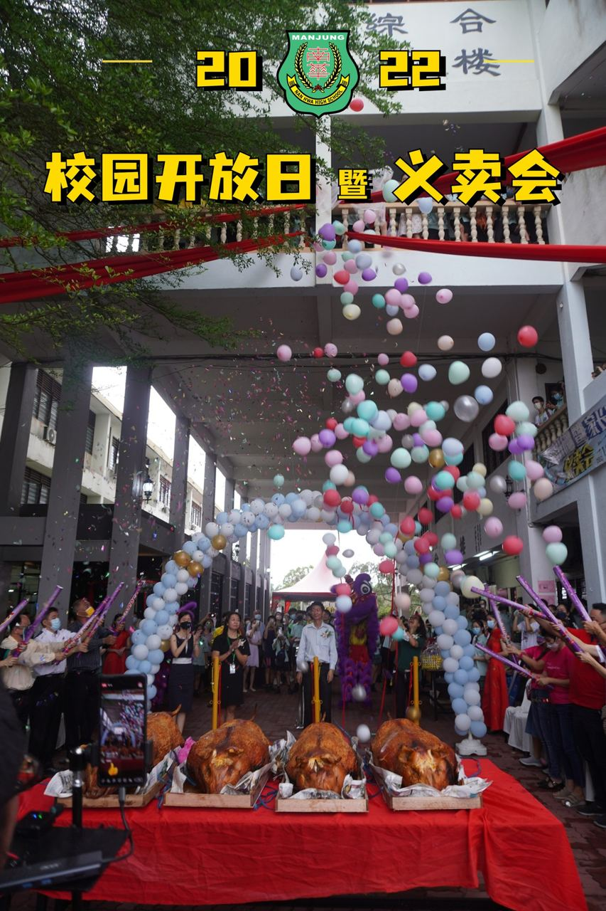
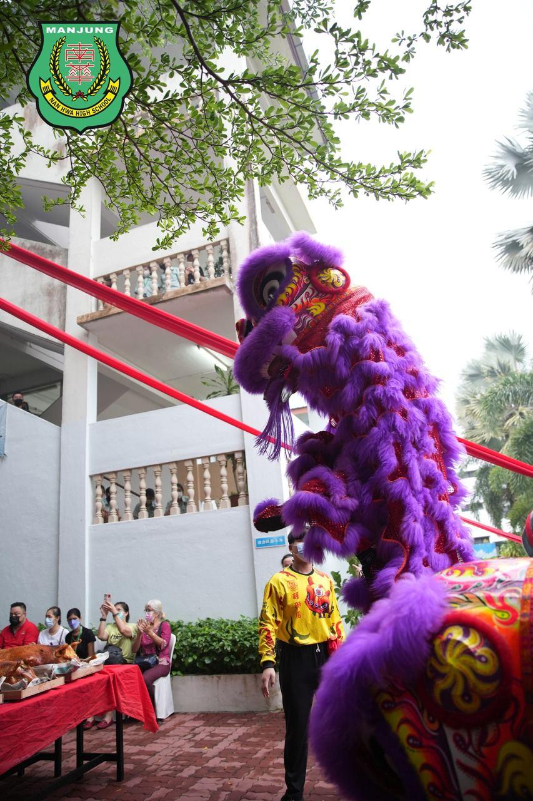
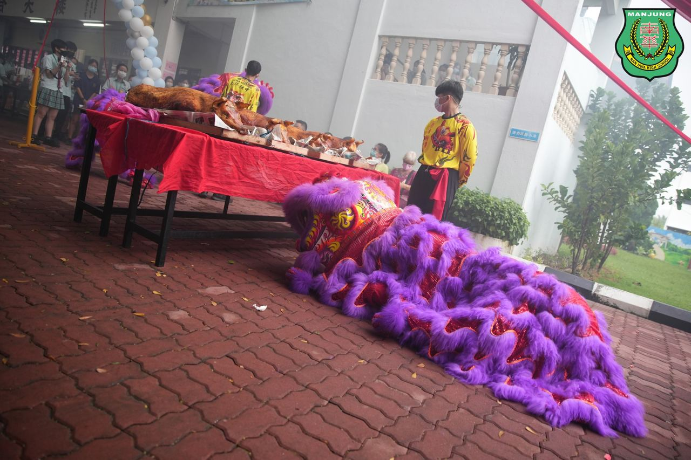
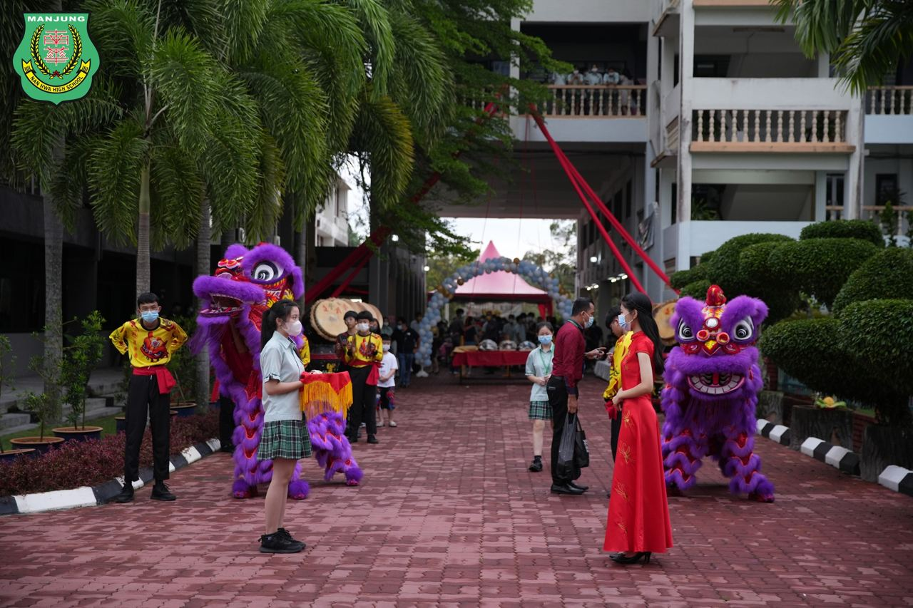
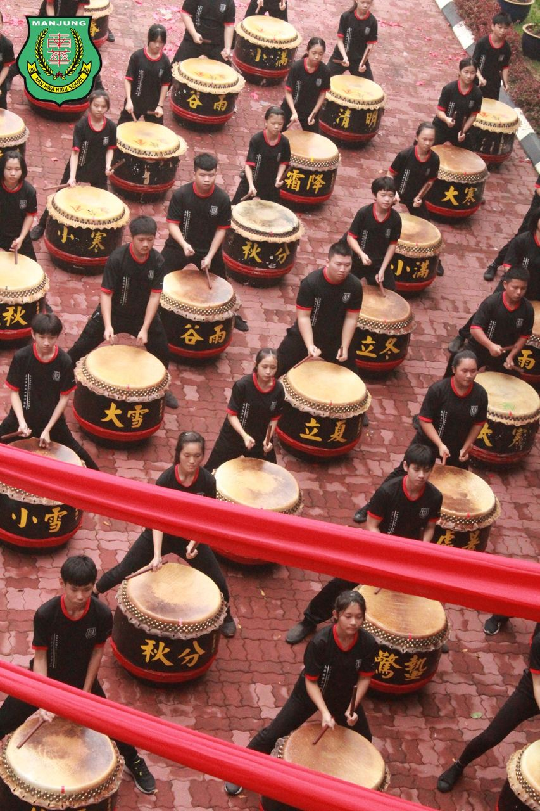
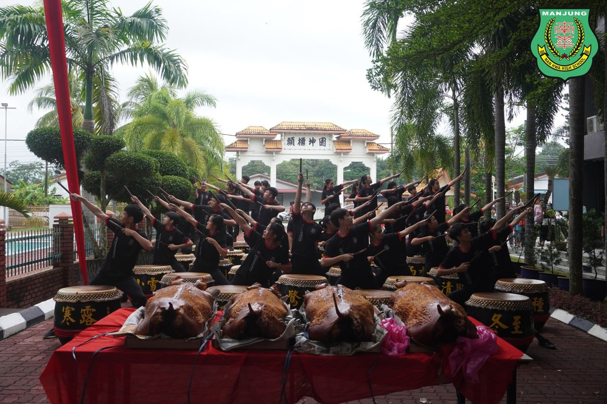
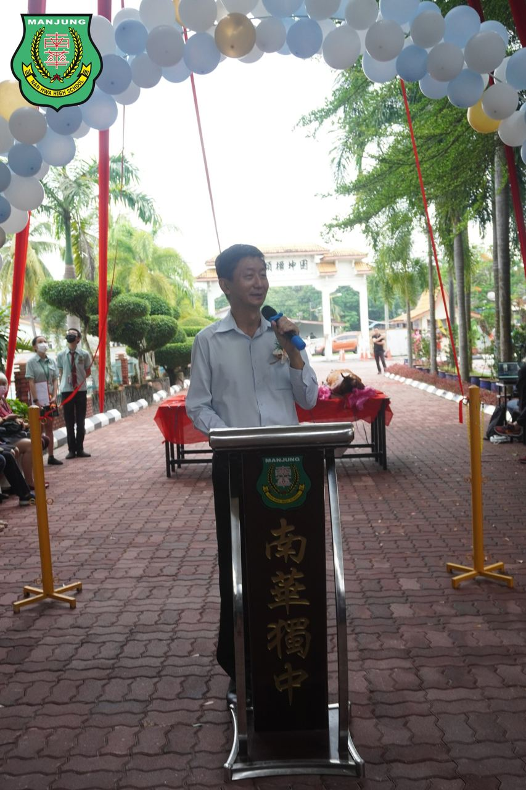
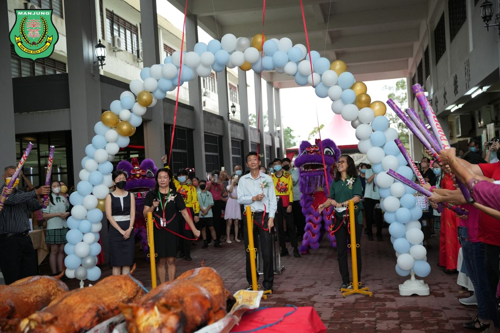

校园开放日暨义卖会
校园开放日暨义卖会
本校南华独中于日前与董事会、家长联谊会及校友会三大机构，联合举办了一场别开生面的校园开放日暨义卖会，反应非常热烈。与本校缔结为姐妹校的育英华小与崇文华小皆出钱出力，助义卖会办得有声有色。
有别于往年，当天也是南华独中的校园开放暨家长日。家长除了能够亲临校园领取学生的成绩册，更能借此机会参观校本与选修课学术成果展，验收南华独中学生整学年的学习成果，其中包括有：趣味科学实验展、咖啡与甜点艺术、小厨师、音乐展、木工手艺展、南华足球机器人、艺术成果展、摄影艺术展、传媒艺术展以及广告设计。南华独中的孩子交出他们自信的成果，吸引家长与外宾驻足欣赏。
阔别了2年的疫情影响，复课后的校园逐渐复苏生机，义卖会终于如愿如愿地在校园内进行，也得到了非同凡响的反应。董家协与校友会都踊跃帮助筹办这次的义卖会，也得到了各界善心人士的慷慨报效，让义卖会充满浓浓的人情味。
与此同时，“小厨师中央厨房”与“咖啡甜点艺术教室”也在当天进行开幕礼，本校学生亲自下厨，烹煮意大利面、冲泡卡布奇诺与烘焙奶油饼干，让前来开幕的剪彩嘉宾试吃。新落成的两间教室，随即投入于校本与选修课程使用，学生得以在环境舒适、设备齐全的空间里，培养自己的兴趣爱好，启发学生的学习动力。
#校园开放日 #义卖会
#小厨师中央厨房 #咖啡甜点艺术教室 #开幕礼
#南华独中 #曼绒 #实兆远







